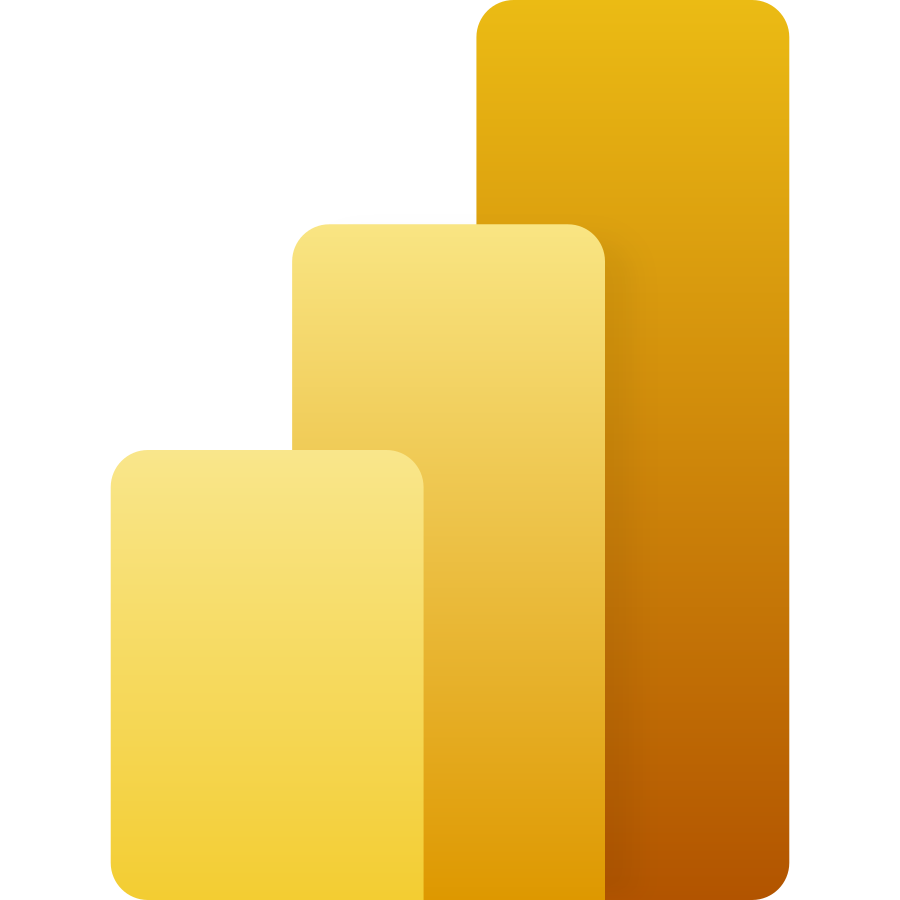
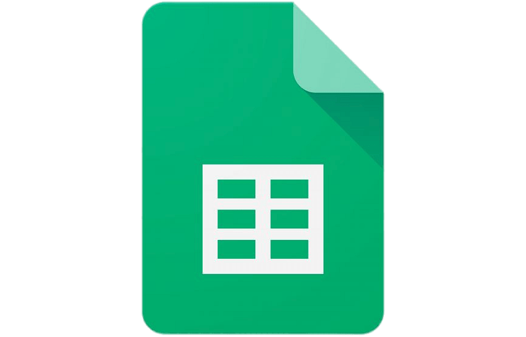

Hi, I'm Jessica
Python • SQL • Tableau • Power BI
Transforming data into actionable insights through analytics and business intelligence. Passionate about solving business problems with Python, SQL, and Power BI.
Contact MeAbout Me
My introduction
Pharmacy graduate transitioning into Data Analytics with a strong foundation in analytical thinking and problem solving.Experienced in Python, SQL, Power BI, and Tableau through hands-on analytics projects. Passionate about transforming data into actionable insights that support smarter business decisions.
Completed
Tools
Built
Technical & Professional Skills
Tools, technologies, and core competencies in data analytics
Power BI Tableau
Tableau

Excel- Data Cleaning
- Data Visualization
- Dashboard Development
- Business Reporting
- Exploratory Data Analysis
- Statistical Analysis
- Data Storytelling
- Sales Analytics
Qualification
My personal journeyPharmacy
Institut Teknologi SumateraData Science
dibimbing.idServices
What I offerData
Analyst
Data
Scientist
Portfolio

Cyclistic Bike-Share Analysis
Business Problem
Casual riders generated substantial usage but showed lower membership conversion, limiting long-term customer retention and recurring revenue.
Goal
Analyze riding behavior differences between casual riders and annual members to identify opportunities for increasing membership conversions and improving customer retention.
Tools
Python • Tableau
Techniques
- Data Cleaning
- Exploratory Data Analysis (EDA)
- Customer Behavior Analysis
- Time Series Analysis
- Route Analysis
- Dashboard Development
Key Insights
• Annual members accounted for 91.4% of total riders, while casual riders represented 8.6%.
• Casual riders increased by 92.25% year-over-year, significantly outpacing member growth.
• Members primarily used bikes during commuting hours, while casual riders preferred afternoon leisure trips.
• Casual riders recorded substantially longer ride durations, highlighting opportunities for membership conversion.
Business Recommendations
Launch targeted membership campaigns for casual riders, optimize bike availability at high-demand stations during peak hours, and introduce commuter-focused incentives to encourage annual membership subscriptions.

Boston Housing Price Prediction
Business Problem
Highly correlated housing features reduced the stability and interpretability of traditional Linear Regression models, leading to less reliable predictions for unseen housing prices.
Goal
Develop and compare Ridge and Lasso Regression models to improve prediction performance, mitigate multicollinearity, and identify the most influential factors affecting housing prices.
Tools
Python • Scikit-Learn • Statsmodels
Techniques
- Data Splitting
- Exploratory Data Analysis (EDA)
- Correlation Analysis
- Variance Inflation Factor (VIF)
- Feature Selection
- Ridge Regression
- Lasso Regression
- Hyperparameter Tuning
- Model Evaluation
Key Insights
• Strong multicollinearity was detected among several housing features.
• Removing redundant features improved model stability and interpretability.
• Ridge Regression produced stable coefficient estimates across correlated variables.
• Lasso Regression achieved the highest test R² score (64.18%), demonstrating better generalization on unseen housing data.
Business Recommendations
Deploy Lasso Regression for house price prediction, apply feature selection to reduce model complexity, and continuously retrain the model with updated market data to improve prediction accuracy and support property valuation decisions.

Customer Churn Prediction using Machine Learning
Business Problem
Telecommunication companies often struggle to identify customers at risk of churning, making retention efforts reactive rather than proactive and increasing customer acquisition costs.
Goal
Develop a machine learning model to accurately predict customer churn, compare multiple classification models, and support proactive customer retention strategies through predictive analytics.
Tools
Python • Scikit-Learn • Pandas
Techniques
- Data Cleaning
- Exploratory Data Analysis (EDA)
- Missing Value Handling
- Label Encoding
- Feature Scaling
- SMOTE Oversampling
- Random Forest
- Decision Tree
- Cross Validation
- K-Fold Cross Validation
- ROC Curve Analysis
- Model Evaluation
Key Insights
• Customer churn data was highly imbalanced and required SMOTE oversampling.
• Random Forest consistently outperformed Decision Tree across multiple evaluation metrics.
• K-Fold Cross Validation achieved an average F1-score of 84.9%, indicating strong model stability.
• The final Random Forest model achieved a ROC-AUC score of 82.42%, demonstrating good capability in distinguishing churn and non-churn customers.
Business Recommendations
Use the prediction model to identify high-risk customers, implement personalized retention campaigns, offer loyalty incentives, and regularly retrain the model with updated customer data to improve long-term prediction performance.

Airline Customer Segmentation using K-Means Clustering
Business Problem
Airlines often apply the same marketing strategy to all customers despite significant differences in travel behavior, loyalty, and spending, reducing the effectiveness of customer retention initiatives.
Goal
Segment airline customers using unsupervised machine learning, compare clustering algorithms, and identify customer groups to support personalized marketing and loyalty strategies.
Tools
Python • Scikit-Learn • Pandas
Techniques
- Data Cleaning
- Missing Value Handling
- Feature Engineering
- Correlation Analysis
- Standard Scaling
- K-Means Clustering
- Agglomerative Clustering
- PCA Visualization
- Elbow Method
- Silhouette Score
- Calinski-Harabasz Index
- Cluster Interpretation
Key Insights
• Customer behavior was successfully segmented into two distinct groups.
• K-Means was selected because it utilized the full dataset, while Agglomerative Clustering required sampling due to memory limitations.
• High Value Loyal Flyers showed higher flight frequency, longer travel distance, higher spending, and stronger loyalty.
• Low Engagement Casual Travelers showed lower engagement and represent strong targets for reactivation campaigns.
Business Recommendations
Develop exclusive loyalty benefits for high-value flyers, while launching targeted promotions, point-expiry reminders, and reactivation campaigns for low-engagement travelers to improve retention and customer lifetime value.